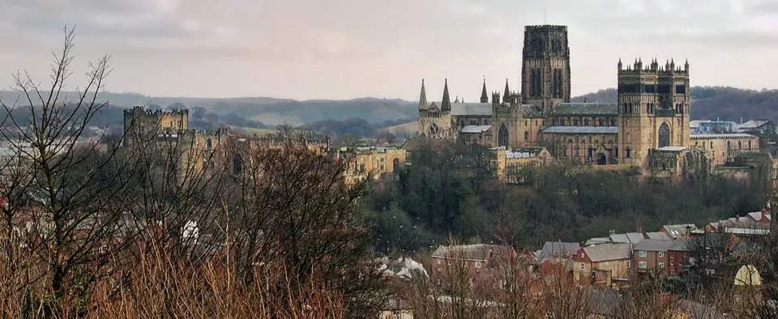
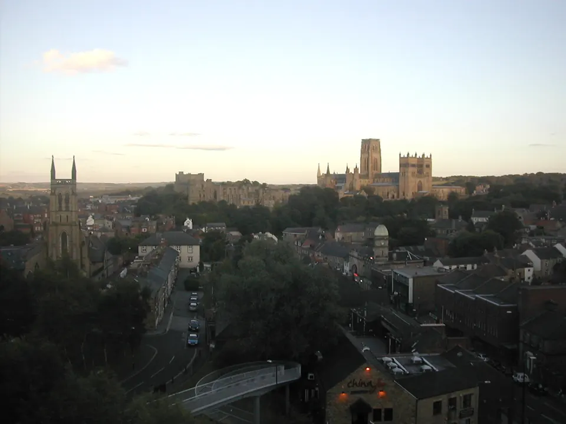
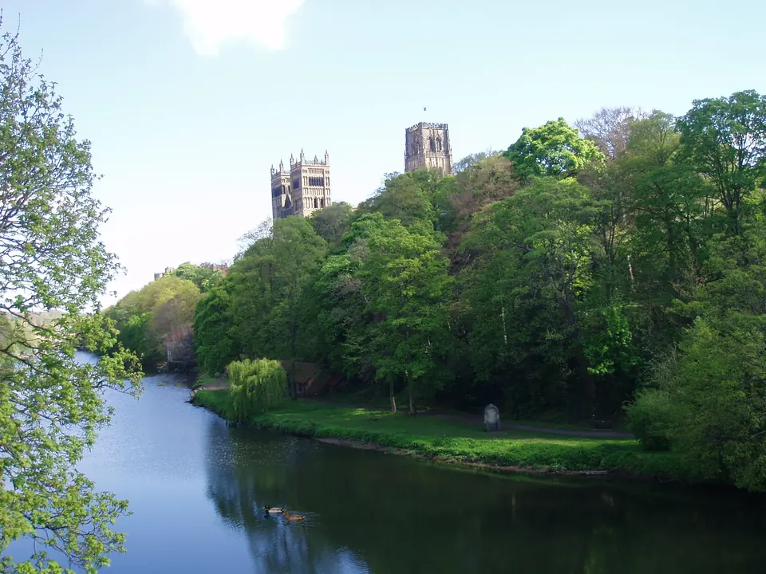
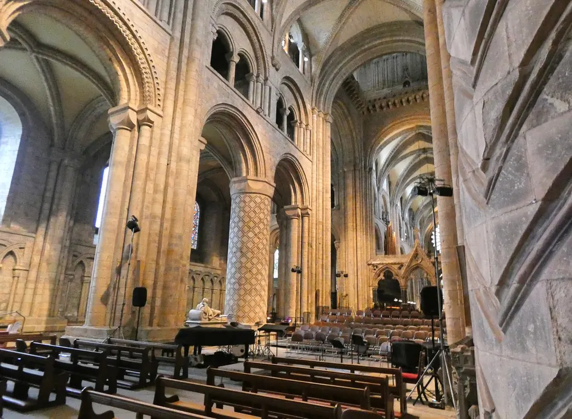
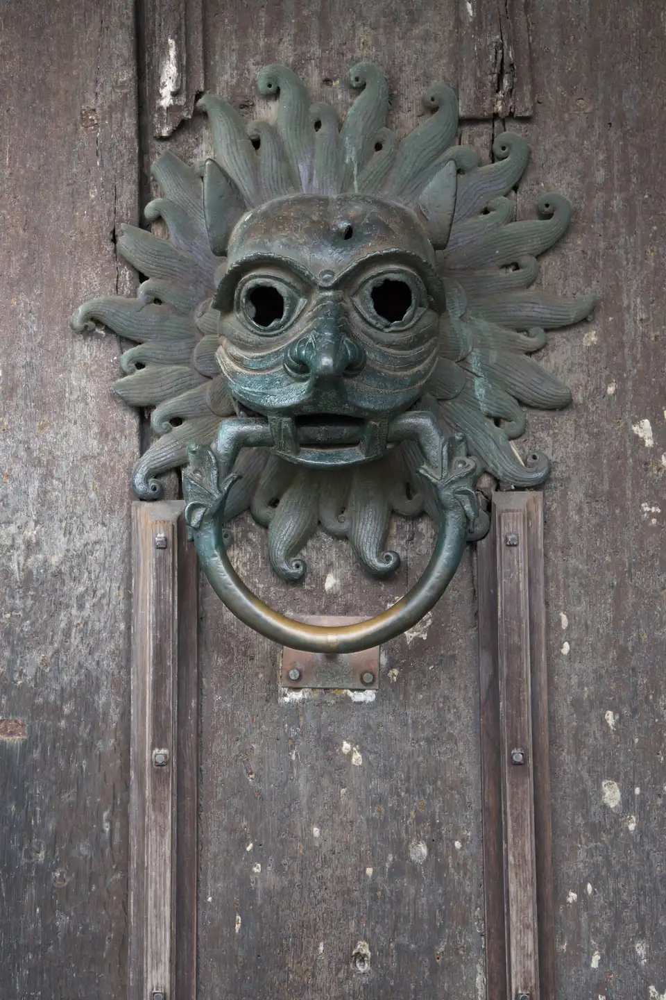
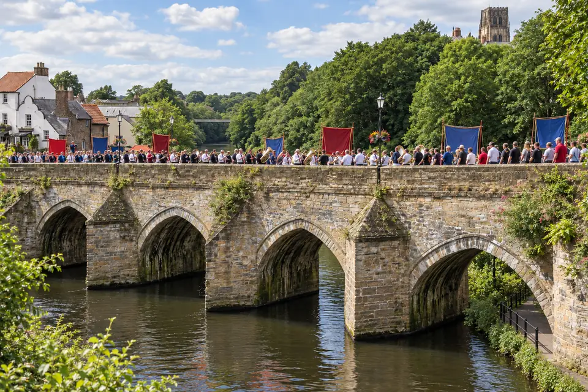
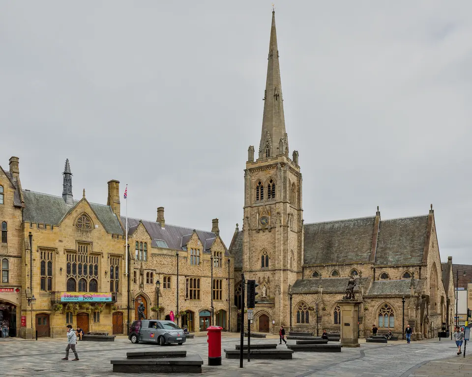
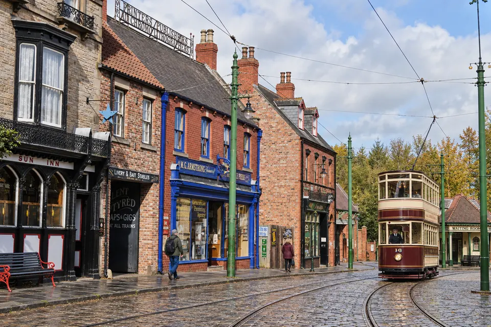

Durham
A World Heritage Cathedral and Castle on a Wooded River Peninsula, at Northern Prices
Explore the Town ↓
Image & Source Notes ↗Life in Durham
A cathedral and castle rise above the wooded loop of the Wear. Durham pairs that World Heritage setting with university life, a hospital and direct main-line rail.
Durham has a Norman cathedral and castle on a rock in a loop of the Wear, a UNESCO World Heritage Site, in a compact university city on the East Coast Main Line, at some of the lowest prices on the list.
Durham has one of the greatest buildings in Europe at the heart of a small, walkable city, with a hospital and fast trains to London and Edinburgh, at prices far below the southern cathedral cities on this list.
- Students dominate the center.
- The north-eastern weather runs cooler.
- The coal-mining legacy makes a mining search essential.
- Nearby Newcastle has no scheduled US flights.
- Direct trains reach London King's Cross in as little as 2 hr 37 min.
- Edinburgh, with its US flights, is under two hours away by train.
- Manchester and London are the other gateways.
- Region / Authority
- North East England · Durham County Council (unitary)
- Population
- About 50,500 in the built-up area (Census 2021)
- Setting
- A peninsula enclosed on three sides by an incised meander of the River Wear, about 234 miles from London
- Heritage
- Durham Castle and Cathedral, UNESCO World Heritage (1986) · shrine of St Cuthbert and tomb of the Venerable Bede · Durham University (1832) · the city founded in 995
- What Makes It Distinct
- A world-class cathedral city at the lowest prices on the list, on the main line between London and Edinburgh
- Inside the Full Atlas
- 29 pages on Durham, within the 244-page United Kingdom Atlas.
Durham & Its Surroundings
Wander the streets, waterways and neighboring towns before you go.
The pin marks the town center. The live map needs an internet connection.
A Closer Look at Durham
Look Beyond the View
Fall for the view, then choose with clear eyes. The full Atlas explains the natural risks checked for this town and where a property deserves a closer look.
- See which natural hazards the research covers
- Tell town-wide conditions apart from one address
- Take the right questions to a local specialist
Picture the Journey
The town you love should be easy to reach, again and again. The full Atlas lays out how you get here, from the arrival point to the final stretch.
- Compare the main ways to get here
- Plan for repeat visits and everyday trips
- Weigh the trade-offs before you pick a base
Find Your Reasons to Stay
The places you remember mix scenery, streets and local life. The town chapter takes you past the first impression to the character underneath.
- Explore the setting, landmarks and local culture
- Discover what makes this town its own
- Picture the pleasures of a longer stay
Renting It While You’re Away
Thinking of renting your home out while you’re away? The Atlas sets the rental questions and local context right beside the place itself.
- Learn which rules and permits to check
- Gauge likely visitors and seasonal demand
- Weigh the practical limits on renting it out
Imagine an Ordinary Week
The view draws you in. Everyday life helps you decide. The full chapter covers the services and practical details of living here beyond a vacation.
- Check healthcare and everyday services
- Picture the shops, connections and daily routines
- See what life is like outside the busy season
Durham and Around, in 8 Pictures







Images from the Atlas, each with its own source and edit notes.
Summary of the United Kingdom Atlas, edition of 26 September 2026. The town order is our editorial ranking. About the Dossier.